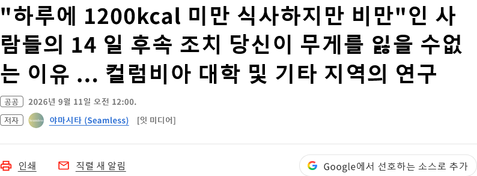

https://bbs.ruliweb.com/best/board/300143/read/76646019

추적 조사 결과
- 참가자가 먹은 양을 47% 적게 신고(1200칼로리 먹었댔는데 실제론 2천 칼로리 이상 먹음)
- 참가자가 운동한 정도는 51% 많이 신고(1천 칼로리 이상 운동했다고 했는데 실제론 700칼로리 정도 소모)
몸은 정직한데 사람이 안 정직했음...
https://www.itmedia.co.jp/news/article/2609/11/2000001315/
결국 인풋 아웃풋은 거짓말을 하지않는다는거..